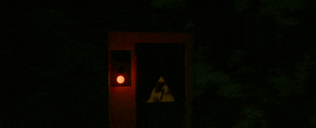
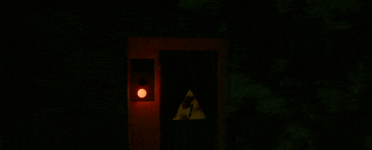
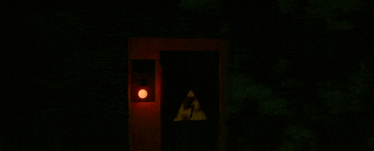
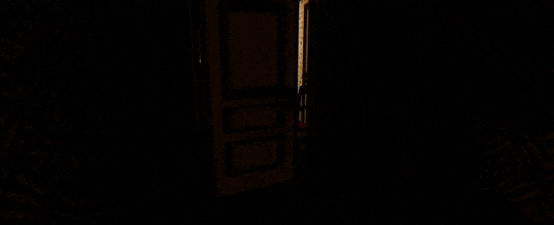
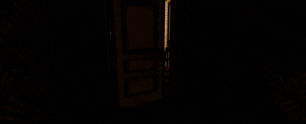
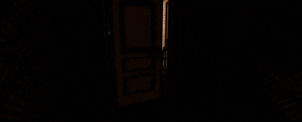

Description
COMING / HOME

A retro slasher horror game, with a focus on home defense. In the dead of night, you hear someone lurking outside - but you are not defenseless. Watch the cameras, barricade your doors, and have your gun at the ready - anything to keep the Sundown Rippers from claiming their next victim.
COMING HOME is a chilling fusion of survival horror and resource management. Inspired by the slasher classics of old, as well as gaming horror classics like Silent Hill and Five Nights at Freddy's, you must defend yourself with booby traps, an unreliable generator, and a rusty revolver - but the Rippers are cunning, and they'll catch on to your tricks.
THIS ISN'T A PUNISHMENT / IT'S AN ASCENSION

You are Douglas Nelson, elderly recent widower, whose children have all moved on. Late at night, a bump in the night and a sinister phone call makes Douglas realize he's fallen under the gaze of the Sundown Rippers, a group of notorious serial killers.
Their leader looks just like the figure Doug's son often drew as a teenager... before he was found dead in an alley. Still haunted by the death of Frank Nelson and yearning for closure, Douglas must confront the Rippers and survive the worst night of his life.
SURVIVAL HORROR / RESOURCE MANAGEMENT
 

The Sundown Rippers are persistent, and will do anything to have you at the other end of their blade. Using your home defense system, you must booby trap windows and scan for movement inside the house - but be wary of the power draining from your backup generator.
You're armed with a revolver as a last resort, but between your shaking aim and your dwindling ammunition... your odds aren't great.
WHEN IT'S SUNDOWN / NO ONE IS SAFE


No robots; no monsters; no ghosts. Just you and them. The Rippers are cunning, intelligent, and will catch on to your strategies if you aren't careful. They will taunt, misdirect, and take control of the things you must rely on to survive. Engage in a tense and stifling chess game, where the stakes are everything and your chances are close to nothing.
REWIND TO A TIME / DRENCHED IN BLOOD
 

The haunting chills of an 80s synth horror soundtrack by Aidan O'Flynn paint the experience of COMING HOME, combined with hand-crafted textures and models. The experience is accentuated by authentic shaders to replicate the visuals of a retro slasher film, with the UI tailored to fit the era.
NO MORE CHAINS / NO MORE MEMORIES


Collect Mementos to confront the past of an unreliable narrator, and discover Evidence to learn the history of the Sundown Rippers' murder spree. In-game documents, mysterious phone calls, and environmental storytelling are key to piecing together the rot within the Nelson household, and the ties that bind them to the Sundown Rippers.
A NIGHTMARE / EVERYONE CAN EXPERIENCE


Accessibility options allow for a customizable experience for anyone brave enough to confront the Rippers. Directional closed captioning, high-contrast visuals, VHS effect toggles, game speed sliders, extensive control options, document transcripts, and more will ensure the Rippers can take their violent murder spree to anyone who crosses their path - they aren't picky.